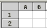
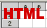

Etats personnalisables
Cet élément de menu de l'onglet Éditions
permet d'afficher à l'écran l'édition de résultats de procédures
stockées, personnalisables dans l'onglet Administration. Ces procédures
sont rédigées en langage SQL et fournissent listes et statistiques.
Cliquez sur le libellé de l'état que vous souhaitez exécuter. Si des paramètres sont à spécifier, un écran intermédiaire est affiché.
Vous pouvez éditer le résultat dans un tableur type Excel ou OpenOffice en cliquant sur cette icône 
Vous pouvez éditer le résultat dans un tableau HTML en cliquant sur cette icône 
Pour exécuter la procédure vous pouvez cliquer sur le libellé.
Vous devez ensuite remplir le paramètre Année de calcul et cliquer sur Démarrer.
Le résultat s'affiche.
En bas de la page, vous pouvez modifier le nombre de
résultats affichés par page. Après avoir modifié ce nombre, cliquez sur
Actualiser pour appliquer les changements.
- Guide en ligne PMB
- Introduction
- Quelques définitions
- Accueil et interface de gestion
- OPAC
- Ergonomie de l'interface de gestion
- Utilisation
- Circulation
- Catalogue
- Autorités
- Éditions
- Etats personnalisables
- Prêts en cours
- Retards par lecteurs
- Retards par date
- Prêts par groupes
- Retards par groupe
- Réservations en cours
- Réservations à traiter
- Lecteurs en cours
- Lecteurs : abonnement bientôt expiré
- Lecteurs : abonnement expiré
- Périodique : Etat des collections
- Codes-barres : Génération libre
- Templates de notices
- Transferts : Validation
- Transferts : Envoi
- Transferts : Retours
- Statistiques de l'OPAC
- Diffusion Sélective de l'Information
- Acquisitions
- Extensions
- Demandes
- Préférences utilisateurs
- Raccourcis clavier
- Administration
- Messages d'erreurs, problèmes et FAQ
- Documentation en cours de réalisation